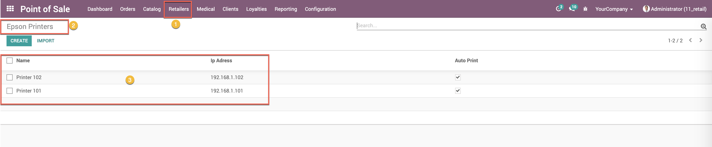
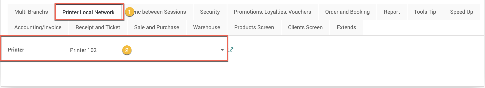
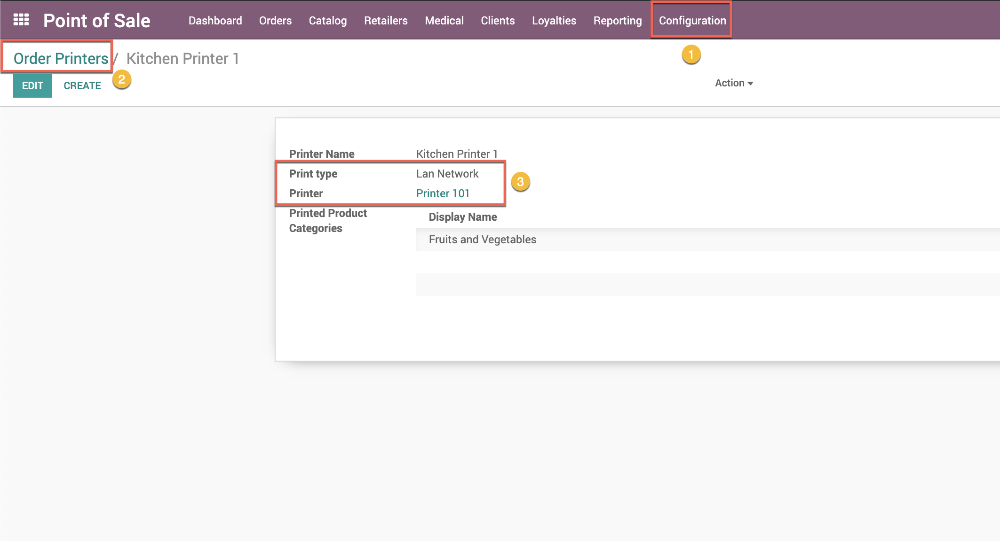
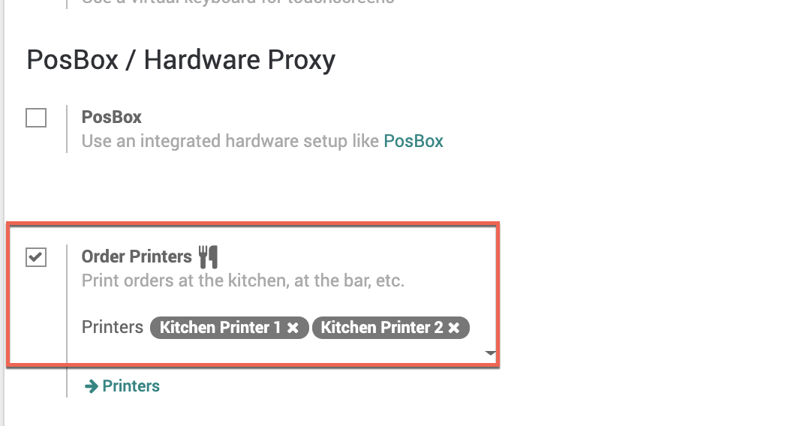
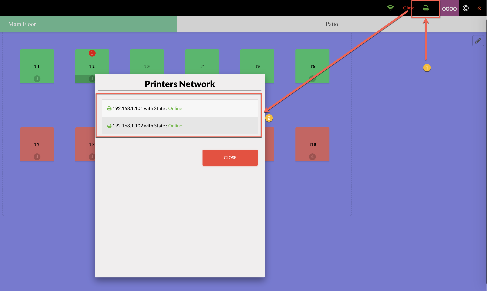
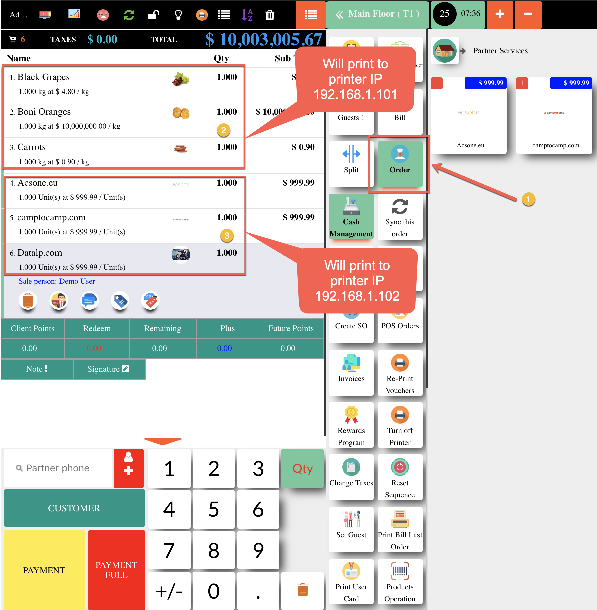
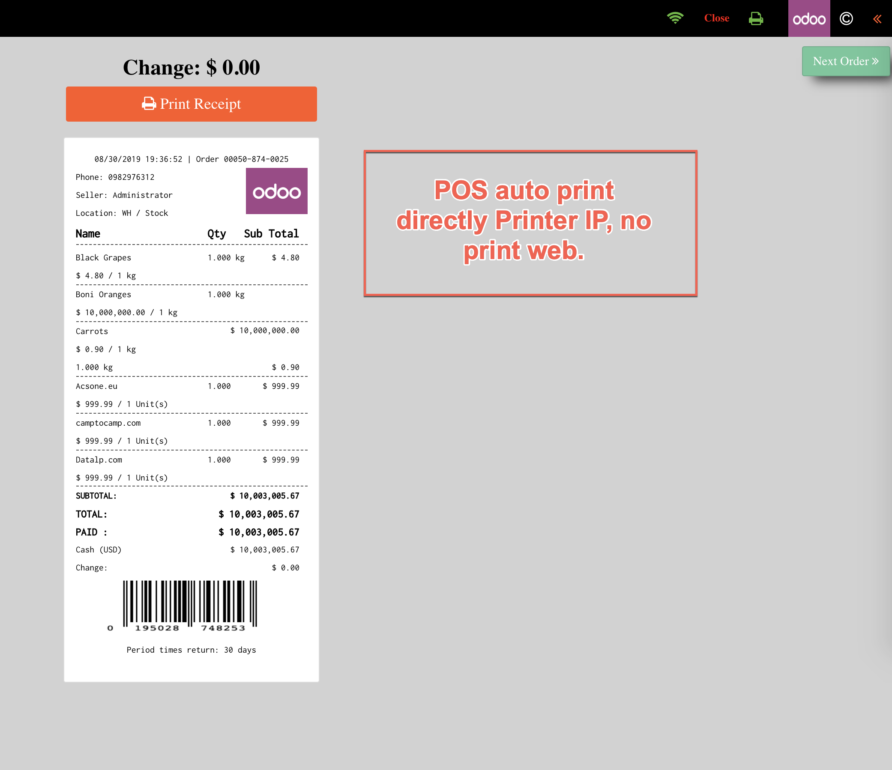

Guide Manual
- 1. Go to menu Retailers / Epson Printers and create Printer you have

- 2. On POS Config, if you no need Print Receipt viva Printer USB (only) (included on POSBOX), you can select Printer Epson Network here

- 3. Each Restaurant Printer, choice Print Type is Network, and select Printer Name

- 4. Back to pos config, on Order Printers. Add Printers you need to use

- 5. Now when your waiters, cashiers ... on POS screen will have 1 button on top right header (Icon Printer Green), Click to this icon, POS will popup all printers Available can use

- 6. Each product wise by POS Category, will printer to directly Printer IP have setup at step (3)

- 7. If you have setup like step (2). This screen POS auto print Receipt directly to POS Epson IP

- 8. Setup Epson Printer Network

- 9. Turn On posboxk

- 10. Get Ip address of POSBOX and input to pos config

- 11. Difference kitchen/bar bill of 2 printer (2 printers lan network)

- 12. Bill on printer cashier's desk